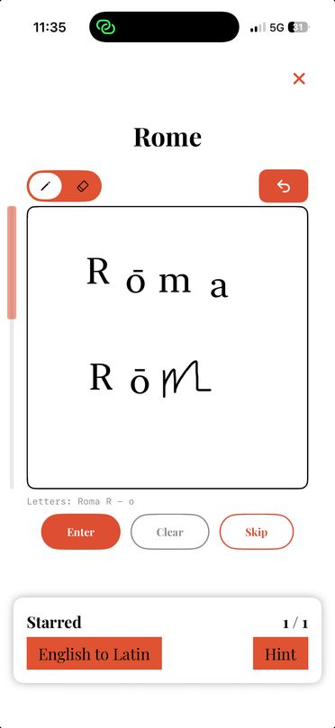
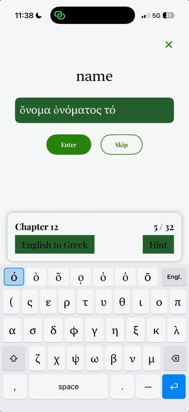
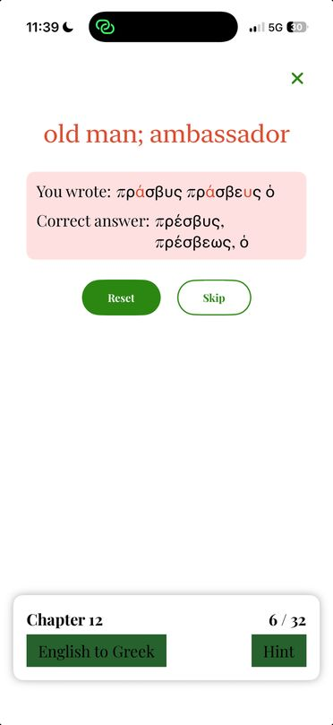
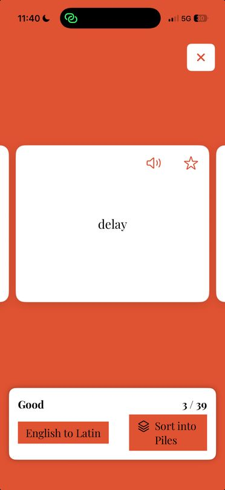
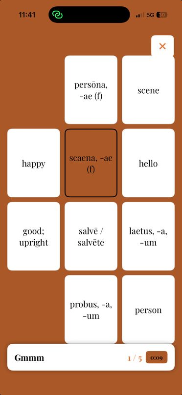
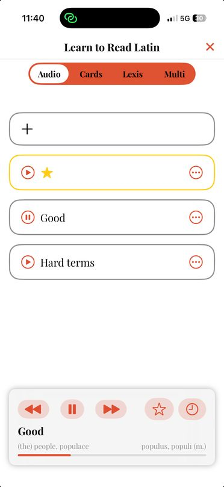
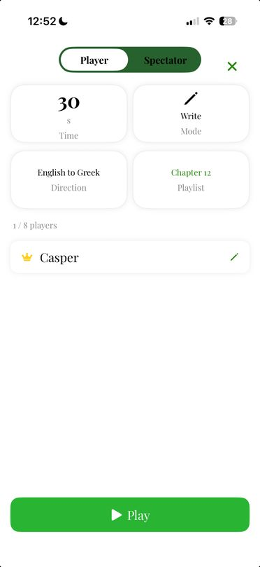

The modern way to study Latin and Greek.
DICTA is a free study app for the vocabulary of Learn to Read Latin, Learn to Read Greek and Lingua Latina per se Illustrata. Practice with flashcards, typing, timed matching, handwriting recognition and the original audio recordings. You can also play multiplayer games with classmates and look things up in a built-in grammar reference and IPA chart. Stars and stats follow you across every mode.
Six ways to practice. Three ways to go deeper.
The practice modes share the chapter lists and playlists you set up once, and stars and stats carry across all of them.







| Singular | Plural | |
|---|---|---|
| Nom. | puella | puellae |
| Gen. | puellae | puellārum |
| Dat. | puellae | puellīs |
| Acc. | puellam | puellās |
| Abl. | puellā | puellīs |
| Voc. | puella | puellae |
Built around the textbooks students actually carry
DICTA follows each book chapter by chapter, with the same spellings, principal parts and glosses. Pick a book to see a few of its words.
DICTA is an independent study companion. It is not affiliated with or endorsed by the authors or publishers of these textbooks.
Who DICTA is for
Students building for students
We study from these books at Collegiate and Regis, so we build the tools we wish we had.
How we decide what to build
Every idea goes on a shared board. We score it for difficulty, benefit and risk, then give it a go or no-go and an owner. Here are some real rows.
| # | Idea | From | Difficulty · Benefit · Risk | Status |
|---|
Scores run from 1 (smallest). Statuses updated to October 2026.
DICTA doesn't know who you are
It is built so that it cannot find out. There's no account, no ads and no tracking, and your study data stays on your device.
No sign-up, login, email address, password or profile. Every feature works without telling us anything about yourself.
Playlists, starred words, statistics and settings are stored on your iPhone or iPad. There is no server holding them.
Your pen strokes are checked locally and then discarded. They are never uploaded, stored as images or sent to anyone.
A short, published list of events, like which mode was opened, tells us what to improve. None of it is tied to a person.
Games run directly between nearby devices over encrypted connections, with no DICTA server in between.
No advertising SDKs, no tracking across apps or websites, and no data sold, rented or shared.
Read the full privacy policyEffective September 10, 2026
The short version
DICTA does not know who you are, and it is built so that it cannot find out.
There is no account. There is no sign-up, no login, no email address, no password, no phone number, no profile. You can install DICTA and use every feature in it without ever telling us a single fact about yourself.
We do not ask for or collect your name, email, contacts, photos, location, device's advertising identifier, or anything else that identifies you as a person. We do not track you across other apps or websites. We do not show ads. We do not sell, rent, share, or trade data with anyone, because we do not hold data about you to begin with.
Your handwriting never leaves your device. Your vocabulary lists, your starred words, your study history, and your accuracy statistics never leave your device. They are stored on your iPhone or iPad and nowhere else. We cannot see them. There is no server holding your study data, because there is no server.
The only information DICTA intentionally sends for analytics is limited usage and technical information — for example, "a Draw session was started in Learn to Read Greek" or "an answer was marked correct." These measurements are not attached to your name or to any identity, because no identity exists. They tell us which study modes are worth improving. They do not tell us anything about you.
Deleting the app deletes DICTA’s locally stored data and stops future analytics collection.
The rest of this document explains all of that in detail.
1. What never reaches us
This section is about what leaves your device. DICTA does keep a record of your own study work — your playlists, your starred terms, your accuracy statistics — but it keeps that record on your device, where only you can see it. Section 2 lists exactly what that is.
What we never receive, and what is never transmitted to us or to anyone else:
- Your name, email address, phone number, postal address, or date of birth
- Any account credentials of any kind (there are no accounts)
- Your precise or approximate geographic location (the app requests no location permission and calls no location services)
- Your device's advertising identifier (IDFA). DICTA contains no advertising SDK and displays no advertising, and it never presents an App Tracking Transparency prompt because it has nothing to track you with.
- Your contacts, calendar, photos, camera, microphone, or health data
- Your handwriting, drawings, or pen strokes
- Your playlists, your starred terms, or your personal accuracy statistics
- The nickname you choose for multiplayer
- Any persistent identifier that follows you across other apps or websites
2. What DICTA records, and keeps on your device
DICTA does keep track of your study work — that is how the Stats screen, your starred terms, and your saved playlists work at all. All of it is stored locally on your device, in the app's own private storage. This includes:
- Your playlists and the terms in them
- Your starred terms
- Your study statistics: per-term and per-chapter accuracy for Draw and Write modes, guess counts, and which days you have studied
- Your settings: dark mode, audio playback speed, volume, whether diacritics are optional, and your notification preference
- Your word-of-the-day queue and the book it draws from
- Your chosen multiplayer nickname, if you have set one
- Which books you have starred in the library
None of this is uploaded. None of this is backed up to us. We cannot read it, request it, or recover it. Some of it is shared between DICTA and its own home-screen widget through a private app group on your device — that is a local mechanism inside your device and involves no network transfer.
If your device is set to back up to iCloud, Apple may include the app's local data in your personal encrypted backup. That is a function of your device and your Apple account, governed by Apple's privacy policy, and it is not something DICTA sends or controls.
3. Handwriting recognition happens on your device
DICTA's core feature is handwriting: you draw Latin or Greek letters and the app checks them against the answer. This is the most sensitive thing the app touches, and it is handled the most conservatively.
Recognition runs entirely on your device using Google ML Kit Digital Ink Recognition, an offline, on-device recognition engine. Your strokes are processed in the app's memory on your hardware, compared against the expected answer, and then discarded. They are never uploaded, never stored as images, and never transmitted to us or to Google.
The one network activity involved is this: the first time you use a handwriting mode for a given language, the app downloads the recognition model for that language (English for Latin, Greek for Greek) from Google's servers. This is a download of a model file to your device. DICTA does not send your handwriting, drawings, or study content as part of this download. After the model is downloaded, handwriting recognition works fully offline.
4. The only data that leaves your device: anonymous usage measurement
DICTA uses Google Firebase Analytics to understand, in aggregate, how the app is used, so that we know which features to improve. This is the entire extent of our data collection.
These are the specific events the app records. This list is complete:
mode_started— which study mode was opened and for which booksession_ended— which mode, which book, and how many seconds the session lastedplaylist_created— that a playlist was created, and for which bookterm_studied— a term identifier, its chapter number, its book, and the modedraw_answer— whether a handwriting answer was correct or incorrect, and the bookmatch_answer— whether a matching answer was correct or incorrect, and the bookmultip_term_played— in multiplayer, which vocabulary word was played, its chapter, its book, and the modemultip_answer_result— in multiplayer, whether an answer was correct, and the book and mode
Plus one setting-level property: whether the "diacritics optional" switch is on or off, so that accuracy figures can be read correctly for the two groups.
Note what is in that list: book names, chapter numbers, vocabulary words from the published textbooks, study modes, durations, and right-or-wrong flags. Note what is not in it: you. There is no name, no nickname, no message, no handwriting, no free text you typed, and no way to work backwards from any of it to a person.
To be precise about the overlap with Section 2: the correct/incorrect flags above mean that anonymous, app-wide accuracy trends are visible to us — how often answers in Greek Draw mode come out right, across everybody. The per-term accuracy record that the Stats screen shows you is a separate, local tally that is never uploaded, and the right-or-wrong events we do receive are not labelled with which term they belong to. We can see that learners find a mode hard. We cannot see your report card, and we cannot tell which learner is which.
Alongside these events, Firebase Analytics automatically records standard technical information: a randomly generated app instance ID, your device model, operating system version, app version, device language, and coarse country-level region inferred from the network request. The app instance ID is generated by Firebase, is specific to this one installation of this one app, and is reset if you delete and reinstall the app. It is not your Apple ID, not your device serial number, and it does not directly identify you by name or connect to a DICTA account.
Advertising identifier collection is not enabled and no advertising SDK is present, so this analytics data is not used for advertising, retargeting, or cross-app profiling.
This data is processed by Google as our analytics provider under Google's own privacy terms: firebase.google.com/support/privacy and policies.google.com/privacy
We do not maintain any separate database of our own. We read aggregate charts.
DICTA does not currently include an in-app switch to turn analytics off. If you do not want this measurement collected, you can delete the app, which stops it immediately and permanently.
5. Multiplayer is peer-to-peer and local
DICTA's multiplayer mode connects devices directly to each other over your local network or Bluetooth, using Apple's MultipeerConnectivity framework. Game data — which term is up, whose turn it is, who answered correctly — travels directly between the devices in the room. It does not pass through any server of ours, because we do not operate one. Sessions are established with encryption required.
To join a game you choose a nickname. This is a display label only. You may enter anything — it does not have to be, and we suggest it not be, your real name. It is stored on your own device so you do not have to retype it, and it is visible to the other players in that game, which is the point of it. Game names advertised on the network are deliberately generic rather than being built from a player's nickname, so that a student's or teacher's name is not broadcast in the clear to anything scanning the network.
For the duration of a game, the app uses your device's vendor identifier — an identifier supplied by iOS, unique to this app on this device, and reset when you delete the app — purely to tell peers apart on the local network. It is not transmitted to us and is not used for analytics or tracking.
This is why the app asks for local network permission. It is used to find the other players in the room, and for nothing else.
6. Notifications
If you turn on study reminders, DICTA schedules local notifications on your device using iOS's own notification system. These are generated on your device by your device. There is no push server, no notification token sent to us, and no remote messaging. Turning the reminders off in Settings, or denying the notification permission, stops them.
7. Audio
Pronunciation audio and chapter recordings are bundled inside the app and play from local files. Playing them involves no network request and no reporting of what you listened to. The app declares a background audio mode so that longer chapter recordings continue playing when you leave the screen.
8. Screen Time / app shielding
DICTA includes an optional study-focus feature, built on Apple's Screen Time (Family Controls) framework, which you can enable to place a shield over other apps until study goals are met. It is off unless you turn it on and grant the Screen Time permission iOS asks for. Apple's framework is designed so that apps never learn which applications a shield applies to: the app receives opaque tokens, not app names or usage histories. DICTA reads and writes those tokens only in local, on-device storage shared between the app and its own extensions. No Screen Time information, no app-usage history, and no shielding activity is transmitted off the device or included in analytics.
9. Children
DICTA is a vocabulary study tool for the Latin and ancient Greek textbooks used in secondary and university courses. It is a general-audience app. It is not directed to children under 13, it is not offered in the App Store Kids Category, and we do not knowingly collect personal information from children under 13.
That said, the app's design means there is very little for a young user to disclose even by accident: there are no accounts, no advertising, no in-app purchases, no chat or free-text messaging between users, no user-generated content that travels beyond a local game, and no field anywhere in the app that asks for a real name, an email address, or an age.
The one piece of free text a user enters is a multiplayer nickname, which stays on that user's own device and is shown only to the other players physically present on the same local network. We never receive it.
If you are a parent, guardian, or teacher and you believe a child has provided personal information through this app, contact us at the address below and we will investigate and delete it.
10. Your choices and your rights
Because we hold no personal data about you, most data rights resolve trivially:
- Access: there is nothing held about you for us to disclose.
- Correction: there is nothing held about you to correct.
- Deletion: delete the app. Every playlist, star, statistic, setting, and stored nickname is removed from your device with it, and the anonymous analytics instance ID is reset. Nothing of yours remains with us, because nothing of yours was ever with us.
- Portability: your study data is on your device and is not held by us.
You can also, at any time, revoke the app's local network and notification permissions in iOS Settings. The relevant features stop working; nothing else is affected.
If you are in a jurisdiction with specific statutory data rights (for example the GDPR in the EEA/UK, or the CCPA in California), you retain those rights in full. We do not sell or share personal information as those laws define it, and we have never done so. To exercise any right, write to us at the address below.
11. Third parties
DICTA integrates exactly two third-party components, both from Google, and both described above:
- Google Firebase Analytics — anonymous usage measurement (Section 4)
- Google ML Kit Digital Ink Recognition — on-device handwriting recognition, with a one-time model download (Section 3)
There are no advertising networks, no attribution or install-tracking SDKs, no crash-reporting services that capture user content, no social media SDKs, and no data brokers. Apple processes App Store downloads and any purchases under its own policies; we receive only aggregate, anonymous App Store reporting from Apple.
12. Security
The strongest security measure in DICTA is architectural: we do not collect personal data, so there is no store of personal data to breach. Study content stays in the app's private storage on your device, protected by iOS's own app sandbox and device encryption. Multiplayer sessions require encryption on the connection between peers.
13. Changes to this policy
If this policy changes, we will update the effective date at the top and publish the revised version in the same place you found this one. If a future version of the app ever begins collecting something meaningfully different from what is described here, we will say so clearly rather than quietly widening this document.
14. Contact
Questions about this policy, or about privacy in DICTA generally: dictalearning@gmail.com
Write your first word tonight.
DICTA Learning is free on iPhone, iPad and Mac. Teachers, publishers and future teammates can reach us by email.
dictalearning@gmail.com